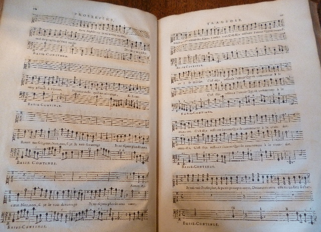

Lully, Proserpine, éd. de 1680Arsenal, Mus-74.Page de titre  Lully, Proserpine, éd. de 1680Arsenal, Mus-74.P. 20-21, couplet d’Aréthuse, acte I, scène 3. Votre navigateur ne supporte pas l’élément audio. Votre navigateur ne supporte pas l’élément audio.